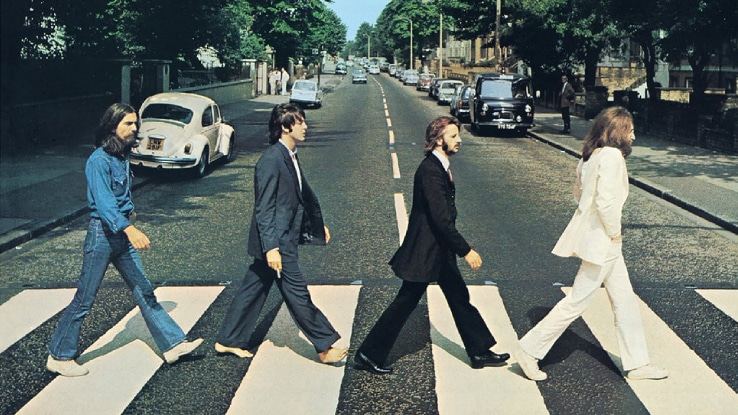

UNA PICCOLA RISSA TEOLOGICA DA GATTINI
Corso Dante, TO - 28 Aprile 2025
by TOMMASO FILIPPUCCI
she thinks she's made of candy.
here she goes

Uno degli spettatori del dibattito.
hey
Torna alla prima pagina